Lab 3 - Static Routing Configuration and End-to-End Connectivity Setup
| Networking | |
| Laboratory 3 – Advanced Network Setup (Short Version) This lab gives practical experience building more complex networks in Cisco Packet Tracer. What you will learn: • How to configure routers and switches, including interfaces, VLANs, and inter-VLAN routing. • How to use static routing together with other routing methods. • How to check and troubleshoot the network with ping, traceroute, and show commands. • How to add basic security: passwords, access rules, and saving configurations. • How to build a multi-layer network that looks more like a real setup. After the lab you can: • Configure advanced settings on Cisco devices. • Make different network segments communicate correctly. • Find and fix routing and configuration problems. • Use good practices for network structure and security. Who it's for: Students and beginners/intermediate learners who want hands-on experience with more realistic network designs. |
Requirements
IPv4: Static Routes
Address Space: IPv4
163.21.192.128/25 – Subnet this range for point-to-point links between routers
(2 IP addresses for each network segment)
- GREEN network: 192.168.192.0/24
- BLUE network: 172.24.93.0/24
- ORANGE network: 10.231.43.0/24
Tasks
Assign IP addresses to all devices
Configure hostname, banners, and enable passwords on R1, R2, and R3
Configure Telnet and SSH on any two routers of your choice
Create static routes to enable end-to-end connectivity between all networks.
Topology Overview

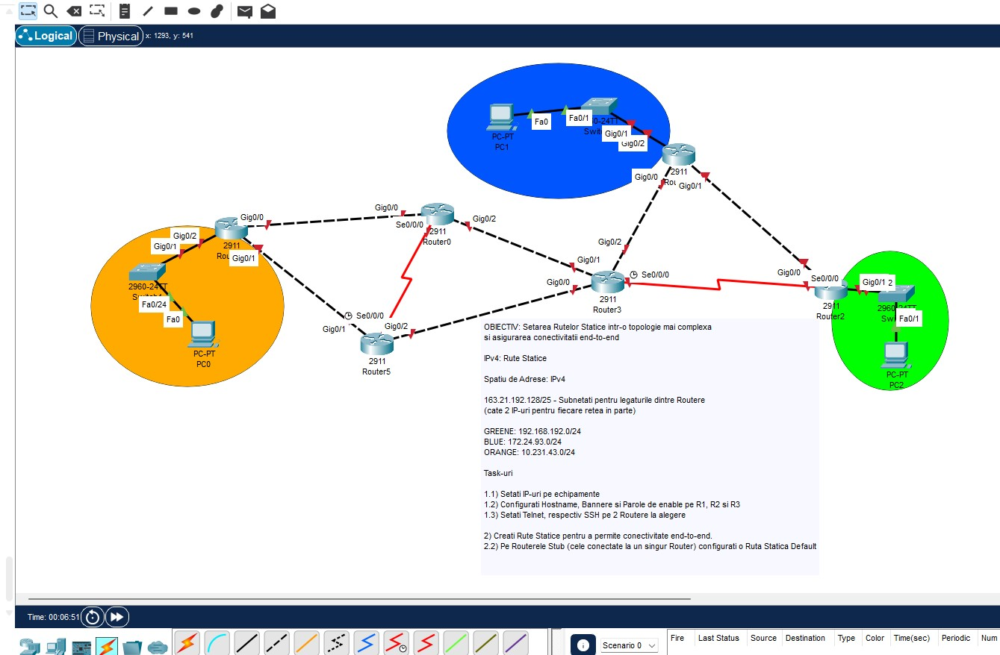
The topology includes serial cabling to demonstrate legacy WAN technologies. However, I have excluded serial links from my configuration, as Ethernet is more relevant to modern network architectures and standards.
Subnetting
I subnetted the range 163.21.192.128/25 into /30 subnets.
The original network, 163.21.192.128/25, contains 128 IP addresses, ranging from 163.21.192.128 to 163.21.192.255.
In a router topology, point-to-point links connect pairs of routers, with each link requiring just 2 usable IP addresses—one for each router interface.
To optimize address usage, we subnet the /25 block into multiple /30 subnets. Each /30 subnet provides:
- 4 IP addresses in total, structured as:
- 1 Network address
- 2 Usable host addresses (for router interfaces)
- 1 Broadcast address
This approach ensures efficient use of address space while keeping each router-to-router link in its own subnet.
Simple Explanation of /25 ➝ /30 Subnetting
I took the /25 subnet (which gives 128 IPs) and divided it into /30 subnets. Since each /30 uses 4 IPs, I can create 32 such subnets. I started from 163.21.192.128 and incremented by 4 each time (128, 132, 136, etc.), which gave me all the /30 subnets within that range.
Device configuration

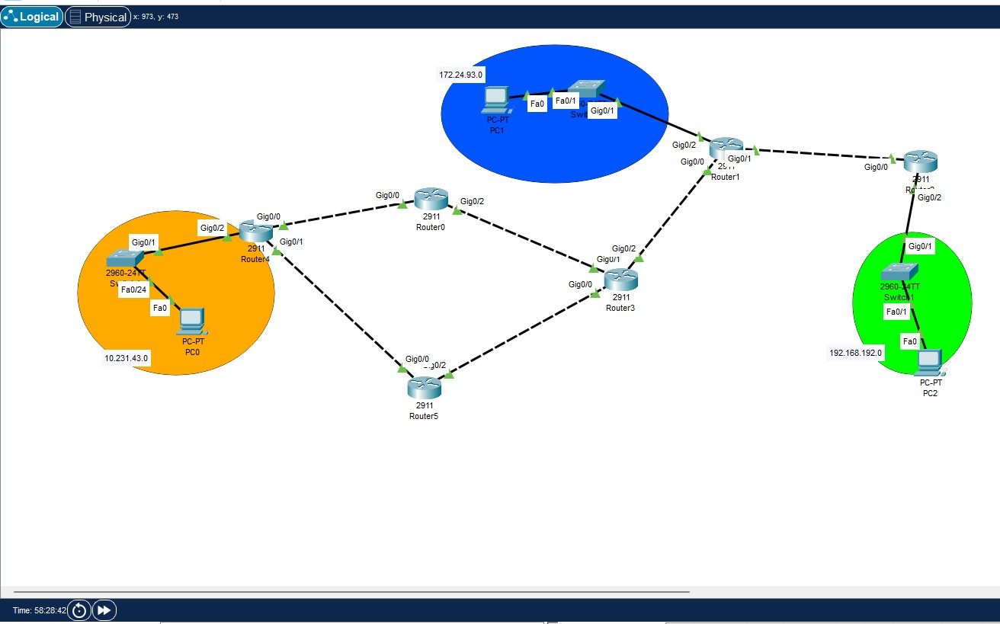
Topology overview

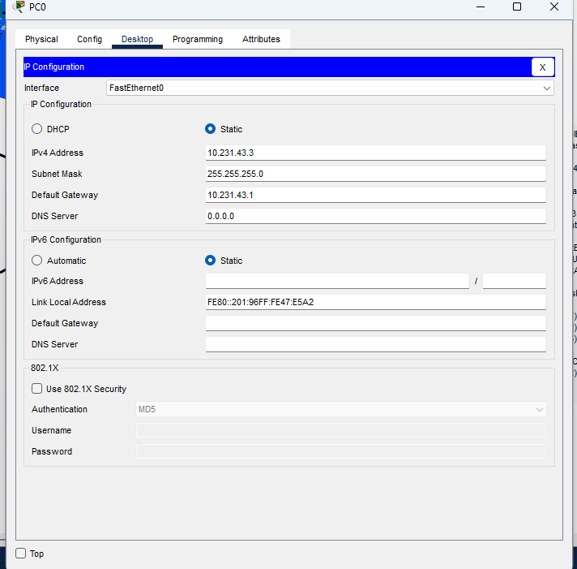
PC IP configuration

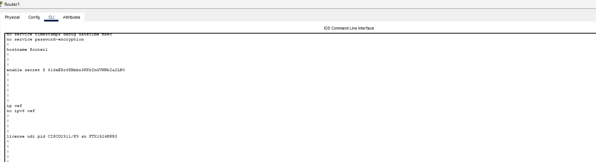
Router configuration: hostname, pass

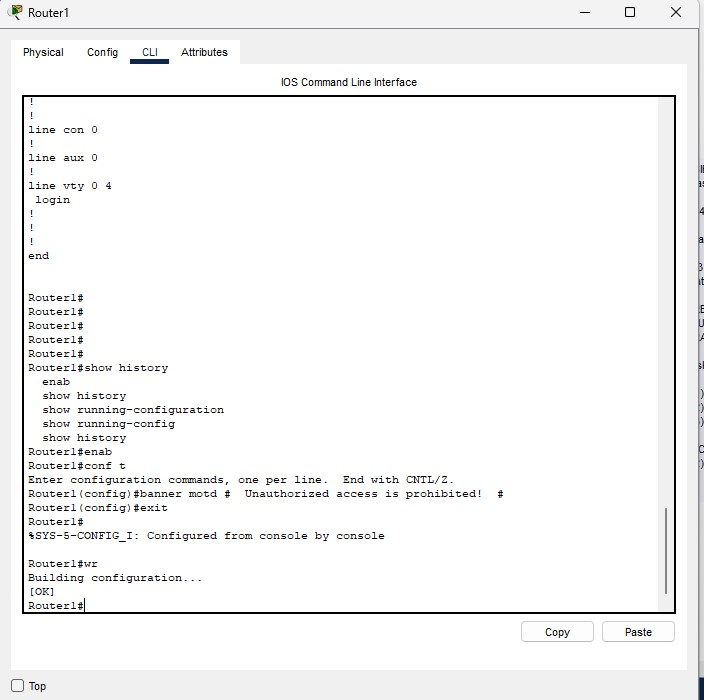
Router banner configuration

Router IP Route configuration

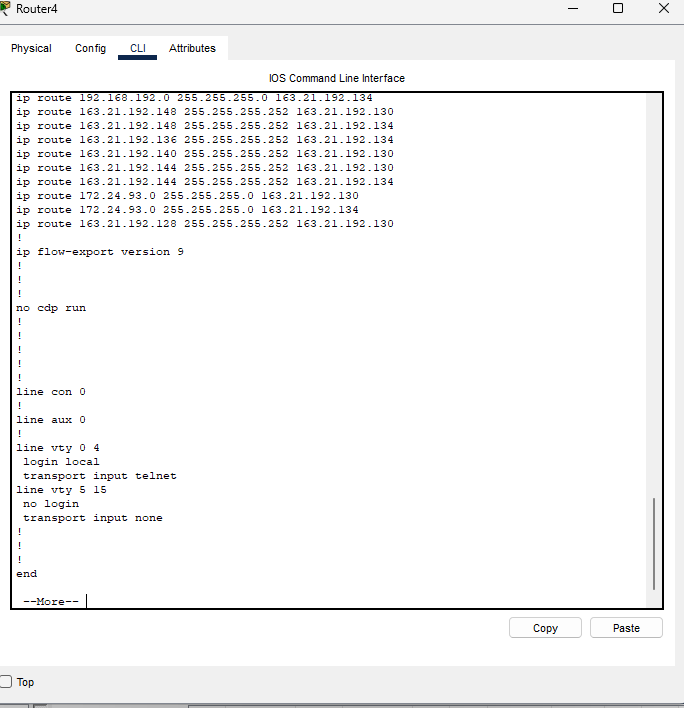
Router telnet configuration

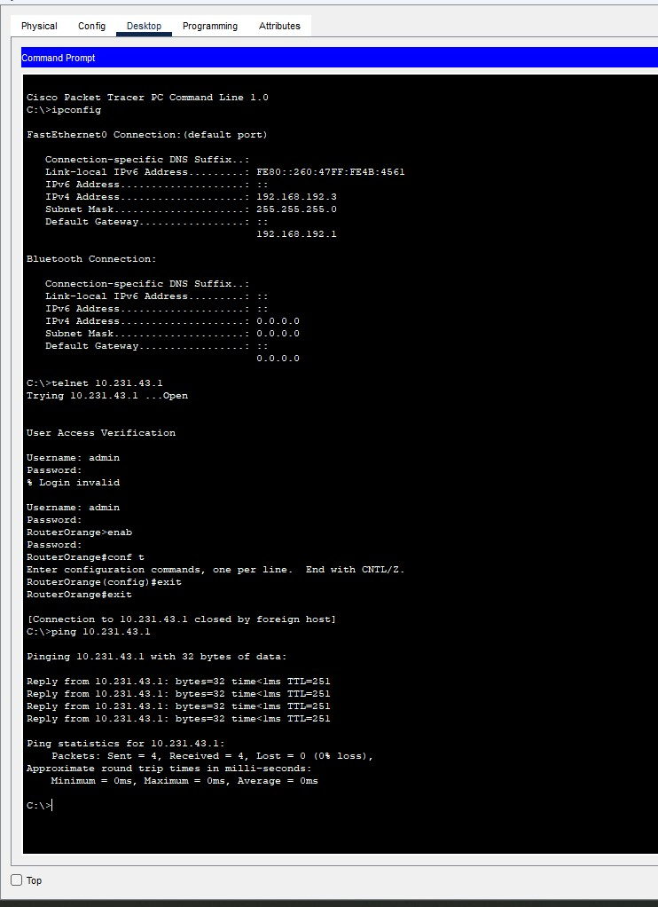
Test telnet connectivity

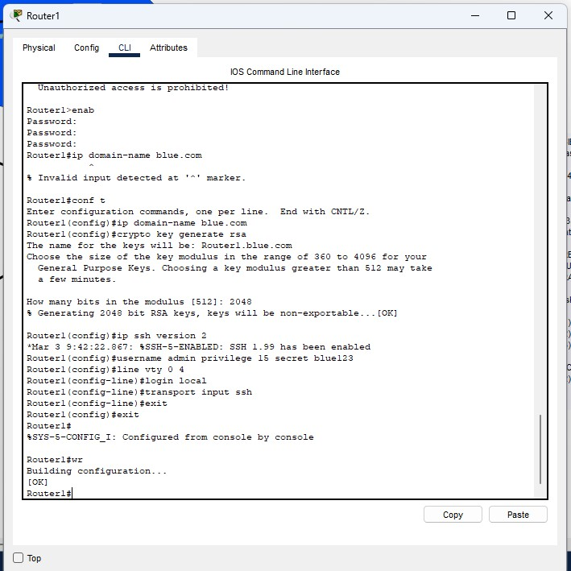
SSH configuration

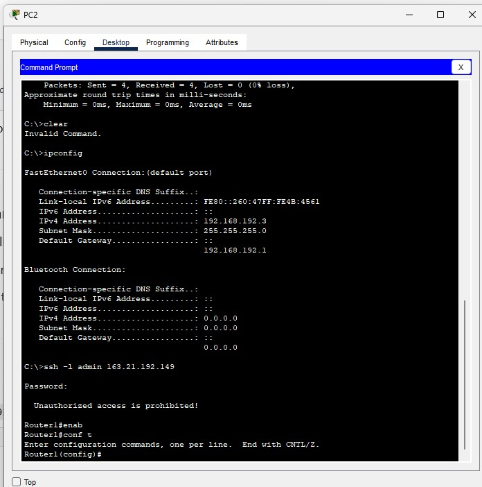
SSH test connectivity
Testing connectivity between LANs

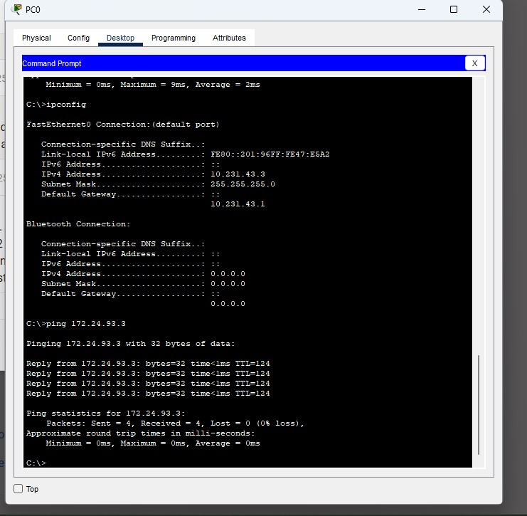
Testing connectivity from Orange LAN to Blue LAN

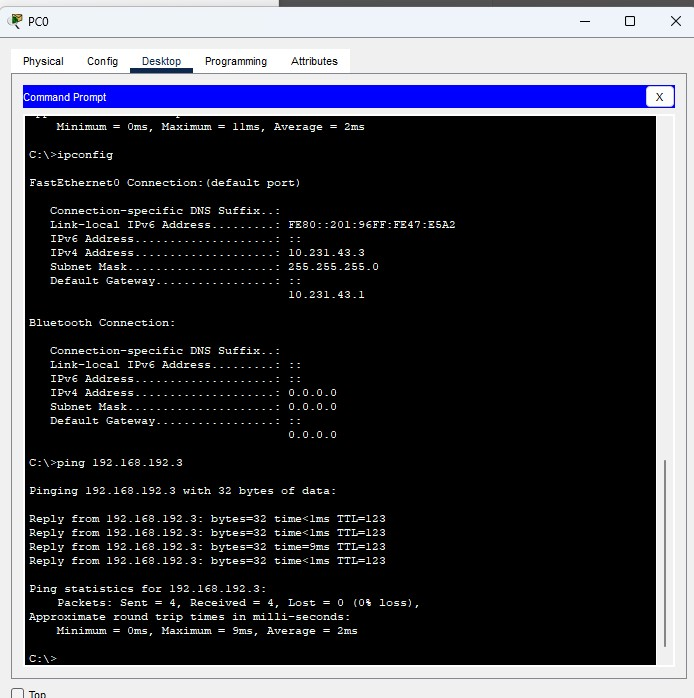
Testing connectivity from Orange LAN to Green LAN
This lab reinforced practical skills in routing configuration and device security within a multi-router environment, while enhancing my understanding of subnetting, remote access protocols, and the principles of static routing.
To review or simulate the network, download the attached .pkt file and open it using Cisco Packet Tracer software.